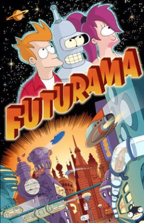

")
 
 IMDB-Wertung: 8.5 / 10
IMDB-Wertung: 8.5 / 10  Metascore:
Metascore: 
Es ist Silvester 1999. Der tollpatschige, vom Leben gebeutelte Pizzabote Fry wird bei einer Lieferung versehentlich eingefroren - und taut erst 1000 Jahre später, an der Grenze zum vierten Millennium, in "Neu New York" wieder auf. Für Fry, der schon dem 20. Jahrhundert kaum gewachsen war, wird das Leben zwar moderner, aber keineswegs einfacher. Er arbeitet jetzt bei Planet Express, dem intergalaktischen Liefer-Service seines Ur-, Ur, Ur- ... Urgroßneffen Dr. Farnsworth. Mit seinen neuen Freunden Leela, einer außerirdischen Zyklopin, und dem entarteten Roboter Bender erkundet er den Weltraum der Zukunft und erlebt auf seinen Touren durch die fünf Quadranten des Universums jede Menge Abenteuer.
Jahr: 1999
Dauer: 21 Minuten
FSK: 12
Land: USA Studio: Fox NetworkTonspuren: MPEG2 - ,
Untertitel:
Auflösung: SD (640x480) Größe: 249 MB
Genre: Sci-Fi, Komödie, Animation/Trick, TV-Serie
Regisseur: Peter Avanzino, Bret Haaland, Gregg Vanzo, Ron Hughart, Brian Sheesley
Drehbuch: David X. Cohen, Matt Groening, Eric Horsted, Ken Keeler, Patric M. Verrone
Soundtrack:
Darsteller:
 John DiMaggio als Bender
John DiMaggio als Bender Tress MacNeille als Linda
Tress MacNeille als Linda Phil LaMarr als Hermes Conrad
Phil LaMarr als Hermes Conrad Lauren Tom als Amy Wong
Lauren Tom als Amy Wong Maurice LaMarche als Morbo
Maurice LaMarche als Morbo Frank Welker als Nibbler
Frank Welker als Nibbler Kath Soucie als Cubert Farnsworth
Kath Soucie als Cubert Farnsworth Tom Kenny als Abner Doubledeal
Tom Kenny als Abner Doubledeal Dan Castellaneta als The Robot Devil
Dan Castellaneta als The Robot Devil George Takei als Himself
George Takei als Himself Leonard Nimoy als Himself
Leonard Nimoy als Himself Lucy Liu als Lucy Liu
Lucy Liu als Lucy Liu Stephen Hawking als Stephen Hawking
Stephen Hawking als Stephen Hawking Sarah Silverman als Michelle
Sarah Silverman als Michelle Pamela Anderson als Dixie
Pamela Anderson als Dixie John Goodman als Robot Santa Claus
John Goodman als Robot Santa Claus Parker Posey als Umbriel
Parker Posey als Umbriel William Shatner als William Shatner
William Shatner als William Shatner Sigourney Weaver als Planet Express Ship
Sigourney Weaver als Planet Express Ship Tara Strong als Tanya
Tara Strong als Tanya Chris Elliott als V-Giny
Chris Elliott als V-Giny Buzz Aldrin als Himself
Buzz Aldrin als Himself Patton Oswalt als Unattractive Giant Monster
Patton Oswalt als Unattractive Giant MonsterDatei: X:\SD-Trick-Collections\Futurama\S01\Futurama - S01E01 - Zeit und Raum 3000.avi seit 24.01.2016
 Alle Filme aus Gruppe 'SD-Trick-Collections\Futurama'
Alle Filme aus Gruppe 'SD-Trick-Collections\Futurama'